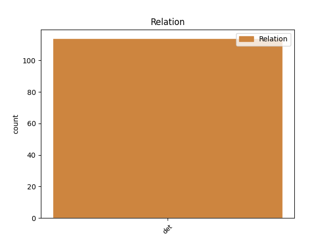
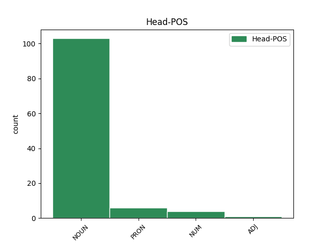
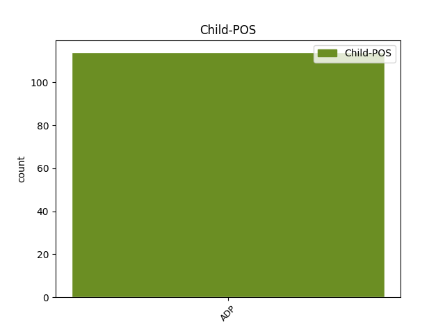

Distribution of features within this leaf



Agreement Rules sorted by frequency.
- When the dependent token is the determiner(det) of the head token, and the head token is NOUN and the dependent token is ADP.
1 Při _ _ _ _ 0 _ _ _
2 montáži _ _ _ _ 0 _ _ _
3 musíme _ _ _ _ 0 _ _ _
4 dát _ _ _ _ 0 _ _ _
5 pozor pozor NOUN NNIS4-----A---- Animacy=Inan|Case=Acc|Gender=Masc|Number=Sing|Polarity=Pos 0 _ _ _
6 na na ADP RR--4---------- AdpType=Prep|Case=Acc 5 det _ LId=na-1
7 to _ _ _ _ 0 _ _ _
8 , _ _ _ _ 0 _ _ _
9 aby _ _ _ _ 0 _ _ _
10 by _ _ _ _ 0 _ _ _
11 profily _ _ _ _ 0 _ _ _
12 nebyly _ _ _ _ 0 _ _ _
13 ukládány _ _ _ _ 0 _ _ _
14 přímo _ _ _ _ 0 _ _ _
15 na _ _ _ _ 0 _ _ _
16 betonové _ _ _ _ 0 _ _ _
17 , _ _ _ _ 0 _ _ _
18 zděné _ _ _ _ 0 _ _ _
19 nebo _ _ _ _ 0 _ _ _
20 ocelové _ _ _ _ 0 _ _ _
21 podklady _ _ _ _ 0 _ _ _
22 . _ _ _ _ 0 _ _ _
1 Jinak _ _ _ _ 0 _ _ _
2 řečeno _ _ _ _ 0 _ _ _
3 , _ _ _ _ 0 _ _ _
4 práce _ _ _ _ 0 _ _ _
5 vzhledem _ _ _ _ 0 _ _ _
6 ke _ _ _ _ 0 _ _ _
7 své _ _ _ _ 0 _ _ _
8 nízké _ _ _ _ 0 _ _ _
9 produktivitě _ _ _ _ 0 _ _ _
10 vytvářela _ _ _ _ 0 _ _ _
11 jen _ _ _ _ 0 _ _ _
12 nutný _ _ _ _ 0 _ _ _
13 výrobek _ _ _ _ 0 _ _ _
14 , _ _ _ _ 0 _ _ _
15 ale _ _ _ _ 0 _ _ _
16 nic nic PRON PW--4---------- Case=Acc|PronType=Neg 0 _ _ _
17 nad nad ADP RR--4---------- AdpType=Prep|Case=Acc 16 det _ LId=nad-1
18 to _ _ _ _ 0 _ _ _
19 čili _ _ _ _ 0 _ _ _
20 žádný _ _ _ _ 0 _ _ _
21 nadvýrobek _ _ _ _ 0 _ _ _
22 . _ _ _ _ 0 _ _ _
Disagree Examples:
1 Ze _ _ _ _ 0 _ _ _
2 základních _ _ _ _ 0 _ _ _
3 ustanovení _ _ _ _ 0 _ _ _
4 bylo _ _ _ _ 0 _ _ _
5 vypuštěno _ _ _ _ 0 _ _ _
6 ustanovení ustanovení NOUN NNNS1-----A---- Case=Nom|Gender=Neut|Number=Sing|Polarity=Pos 0 _ _ _
7 o o ADP RR--6---------- AdpType=Prep|Case=Loc 6 det _ _
8 tom _ _ _ _ 0 _ _ _
9 , _ _ _ _ 0 _ _ _
10 že _ _ _ _ 0 _ _ _
11 každý _ _ _ _ 0 _ _ _
12 účastník _ _ _ _ 0 _ _ _
13 silničního _ _ _ _ 0 _ _ _
14 provozu _ _ _ _ 0 _ _ _
15 je _ _ _ _ 0 _ _ _
16 povinen _ _ _ _ 0 _ _ _
17 odvrátit _ _ _ _ 0 _ _ _
18 podle _ _ _ _ 0 _ _ _
19 svých _ _ _ _ 0 _ _ _
20 možností _ _ _ _ 0 _ _ _
21 hrozící _ _ _ _ 0 _ _ _
22 nebezpečí _ _ _ _ 0 _ _ _
23 i _ _ _ _ 0 _ _ _
24 tehdy _ _ _ _ 0 _ _ _
25 , _ _ _ _ 0 _ _ _
26 porušil _ _ _ _ 0 _ _ _
27 - _ _ _ _ 0 _ _ _
28 li _ _ _ _ 0 _ _ _
29 jiný _ _ _ _ 0 _ _ _
30 svoje _ _ _ _ 0 _ _ _
31 povinnosti _ _ _ _ 0 _ _ _
32 . _ _ _ _ 0 _ _ _
1 Potvrzením potvrzení NOUN NNNS7-----A---- Case=Ins|Gender=Neut|Number=Sing|Polarity=Pos 0 _ _ _
2 organizace _ _ _ _ 0 _ _ _
3 , _ _ _ _ 0 _ _ _
4 u _ _ _ _ 0 _ _ _
5 níž _ _ _ _ 0 _ _ _
6 byl _ _ _ _ 0 _ _ _
7 pracovník _ _ _ _ 0 _ _ _
8 dosud _ _ _ _ 0 _ _ _
9 v _ _ _ _ 0 _ _ _
10 pracovním _ _ _ _ 0 _ _ _
11 poměru _ _ _ _ 0 _ _ _
12 , _ _ _ _ 0 _ _ _
13 o o ADP RR--6---------- AdpType=Prep|Case=Loc 1 det _ _
14 tom _ _ _ _ 0 _ _ _
15 , _ _ _ _ 0 _ _ _
16 jaká _ _ _ _ 0 _ _ _
17 doba _ _ _ _ 0 _ _ _
18 mu _ _ _ _ 0 _ _ _
19 byla _ _ _ _ 0 _ _ _
20 započtena _ _ _ _ 0 _ _ _
21 pro _ _ _ _ 0 _ _ _
22 účely _ _ _ _ 0 _ _ _
23 dovolené _ _ _ _ 0 _ _ _
24 na _ _ _ _ 0 _ _ _
25 zotavenou _ _ _ _ 0 _ _ _
26 , _ _ _ _ 0 _ _ _
27 kolik _ _ _ _ 0 _ _ _
28 pracovních _ _ _ _ 0 _ _ _
29 dnů _ _ _ _ 0 _ _ _
30 pracovník _ _ _ _ 0 _ _ _
31 vyčerpal _ _ _ _ 0 _ _ _
32 ze _ _ _ _ 0 _ _ _
33 své _ _ _ _ 0 _ _ _
34 dovolené _ _ _ _ 0 _ _ _
35 za _ _ _ _ 0 _ _ _
36 běžný _ _ _ _ 0 _ _ _
37 kalendářní _ _ _ _ 0 _ _ _
38 rok _ _ _ _ 0 _ _ _
39 , _ _ _ _ 0 _ _ _
40 popřípadě _ _ _ _ 0 _ _ _
41 za _ _ _ _ 0 _ _ _
42 kolik _ _ _ _ 0 _ _ _
43 dnů _ _ _ _ 0 _ _ _
44 dostal _ _ _ _ 0 _ _ _
45 náhradu _ _ _ _ 0 _ _ _
46 za _ _ _ _ 0 _ _ _
47 nevyčerpanou _ _ _ _ 0 _ _ _
48 dovolenou _ _ _ _ 0 _ _ _
49 nebo _ _ _ _ 0 _ _ _
50 o _ _ _ _ 0 _ _ _
51 kolik _ _ _ _ 0 _ _ _
52 pracovních _ _ _ _ 0 _ _ _
53 dnů _ _ _ _ 0 _ _ _
54 byla _ _ _ _ 0 _ _ _
55 dovolená _ _ _ _ 0 _ _ _
56 zkrácena _ _ _ _ 0 _ _ _
57 a _ _ _ _ 0 _ _ _
58 z _ _ _ _ 0 _ _ _
59 jakého _ _ _ _ 0 _ _ _
60 důvodu _ _ _ _ 0 _ _ _
61 . _ _ _ _ 0 _ _ _
1 Mimo _ _ _ _ 0 _ _ _
2 to _ _ _ _ 0 _ _ _
3 může _ _ _ _ 0 _ _ _
4 podnik _ _ _ _ 0 _ _ _
5 s _ _ _ _ 0 _ _ _
6 pracovníkem _ _ _ _ 0 _ _ _
7 při _ _ _ _ 0 _ _ _
8 sjednávání _ _ _ _ 0 _ _ _
9 pracovní _ _ _ _ 0 _ _ _
10 smlouvy _ _ _ _ 0 _ _ _
11 dohodnout _ _ _ _ 0 _ _ _
12 jeho _ _ _ _ 0 _ _ _
13 mzdové _ _ _ _ 0 _ _ _
14 zařazení _ _ _ _ 0 _ _ _
15 odpovídající _ _ _ _ 0 _ _ _
16 sjednanému _ _ _ _ 0 _ _ _
17 druhu _ _ _ _ 0 _ _ _
18 práce _ _ _ _ 0 _ _ _
19 , _ _ _ _ 0 _ _ _
20 další _ _ _ _ 0 _ _ _
21 podmínky _ _ _ _ 0 _ _ _
22 , _ _ _ _ 0 _ _ _
23 na na ADP RR--6---------- AdpType=Prep|Case=Loc 26 det _ _
24 kterých _ _ _ _ 0 _ _ _
25 mají _ _ _ _ 0 _ _ _
26 zájem zájem NOUN NNIS4-----A---- Animacy=Inan|Case=Acc|Gender=Masc|Number=Sing|Polarity=Pos 0 _ _ _
27 . _ _ _ _ 0 _ _ _
1 V _ _ _ _ 0 _ _ _
2 průběhu _ _ _ _ 0 _ _ _
3 posledních _ _ _ _ 0 _ _ _
4 # _ _ _ _ 0 _ _ _
5 dnů _ _ _ _ 0 _ _ _
6 před _ _ _ _ 0 _ _ _
7 nástupem _ _ _ _ 0 _ _ _
8 lázeňské _ _ _ _ 0 _ _ _
9 péče _ _ _ _ 0 _ _ _
10 je _ _ _ _ 0 _ _ _
11 nemocný _ _ _ _ 0 _ _ _
12 povinen _ _ _ _ 0 _ _ _
13 vyžádat _ _ _ _ 0 _ _ _
14 si _ _ _ _ 0 _ _ _
15 potvrzení potvrzení NOUN NNNS4-----A---- Case=Acc|Gender=Neut|Number=Sing|Polarity=Pos 0 _ _ _
16 ošetřujícího _ _ _ _ 0 _ _ _
17 lékaře _ _ _ _ 0 _ _ _
18 o o ADP RR--6---------- AdpType=Prep|Case=Loc 15 det _ LId=o-1
19 tom _ _ _ _ 0 _ _ _
20 , _ _ _ _ 0 _ _ _
21 že _ _ _ _ 0 _ _ _
22 jeho _ _ _ _ 0 _ _ _
23 zdravotní _ _ _ _ 0 _ _ _
24 stav _ _ _ _ 0 _ _ _
25 odpovídá _ _ _ _ 0 _ _ _
26 indikaci _ _ _ _ 0 _ _ _
27 lázeňské _ _ _ _ 0 _ _ _
28 léčebny _ _ _ _ 0 _ _ _
29 podle _ _ _ _ 0 _ _ _
30 platného _ _ _ _ 0 _ _ _
31 indikačního _ _ _ _ 0 _ _ _
32 seznamu _ _ _ _ 0 _ _ _
33 a _ _ _ _ 0 _ _ _
34 že _ _ _ _ 0 _ _ _
35 odůvodněnost _ _ _ _ 0 _ _ _
36 lázeňské _ _ _ _ 0 _ _ _
37 péče _ _ _ _ 0 _ _ _
38 trvá _ _ _ _ 0 _ _ _
39 . _ _ _ _ 0 _ _ _
1 Nemalou _ _ _ _ 0 _ _ _
2 zásluhu zásluha NOUN NNFS4-----A---- Case=Acc|Gender=Fem|Number=Sing|Polarity=Pos 0 _ _ _
3 na na ADP RR--6---------- AdpType=Prep|Case=Loc 2 det _ LId=na-1
4 tom _ _ _ _ 0 _ _ _
5 má _ _ _ _ 0 _ _ _
6 i _ _ _ _ 0 _ _ _
7 ideově _ _ _ _ 0 _ _ _
8 výchovné _ _ _ _ 0 _ _ _
9 působení _ _ _ _ 0 _ _ _
10 ROH _ _ _ _ 0 _ _ _
11 , _ _ _ _ 0 _ _ _
12 odbočky _ _ _ _ 0 _ _ _
13 SČSP _ _ _ _ 0 _ _ _
14 i _ _ _ _ 0 _ _ _
15 ZO _ _ _ _ 0 _ _ _
16 SSM _ _ _ _ 0 _ _ _
17 . _ _ _ _ 0 _ _ _